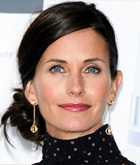
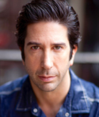
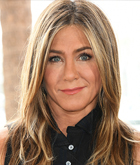
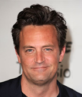
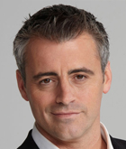
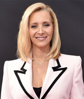

Courteney Cox
Courteney Bass Cox (previously Courteney Cox Arquette) is an American actress, producer, and director. She gained recognition for her starring role as Monica Geller on Friends, for which she received seven Screen Actors Guild Award nominations, of which she won one. Initially she was asked to audition for the role of Rachel Green but in the end was cast as Monica.
David Schwimmer
David Lawrence Schwimmer is an American actor, director, producer and comedian. Schwimmer gained worldwide recognition for playing Ross Geller in Friends, for which he received a Screen Actors Guild award and a Primetime Emmy Award nomination for Outstanding Supporting Actor in a Comedy Series in 1995.
Jennifer Aniston
Jennifer Joanna Aniston is an American actress, producer, and businesswoman who rose to international fame for her role as Rachel Green, for which she earned Primetime Emmy, Golden Globe, and Screen Actors Guild awards. The producers wanted Aniston to audition for the role of Monica Geller, but Courteney Cox was deemed more suitable, and Aniston was cast as Rachel.
Matthew Perry
Matthew Langford Perry is a Canadian-American actor, executive producer, and comedian. He is best known for his role as Chandler Bing on Friends. Due to the immense popularity of the sitcom, Perry and the rest of the six-member main cast ensemble were each making $1 million per episode by 2002. While growing up, he was a top-ranked junior tennis player.
Matt LeBlanc
Matthew Steven LeBlanc is an American actor, television producer and comedian. He garnered global recognition with his portrayal of Joey Tribbiani in Friends. Although he had booked commercials and television and film roles before Friends, he was reportedly down to his last eleven dollars before landing the role of Joey Tribbiani.
Lisa Kudrow
Lisa Valerie Kudrow is an American actress, comedian, writer, and producer. Kudrow came to international prominence in the 1990s for portraying Phoebe Buffay in Friends, which earned her Primetime Emmy and Screen Actors Guild awards. Her character was widely popular while the series aired and was later recognized as one of the greatest female characters in US TV.